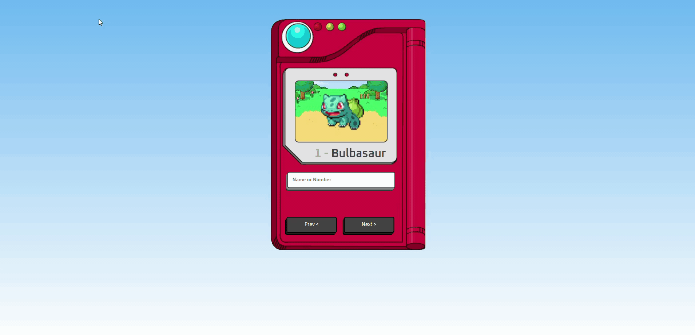
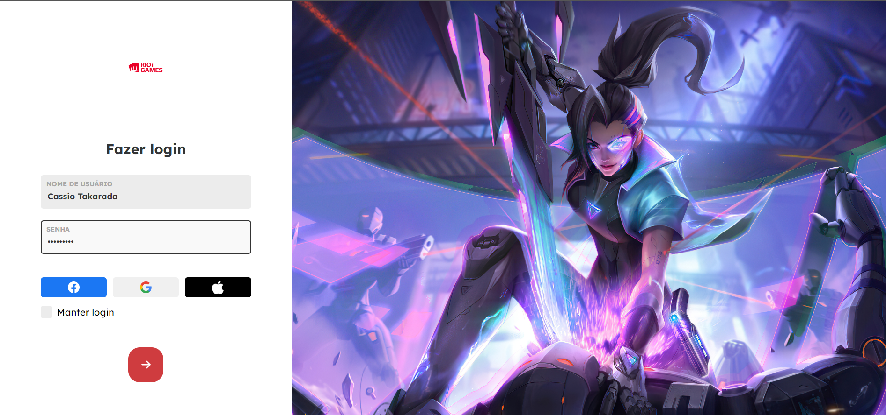
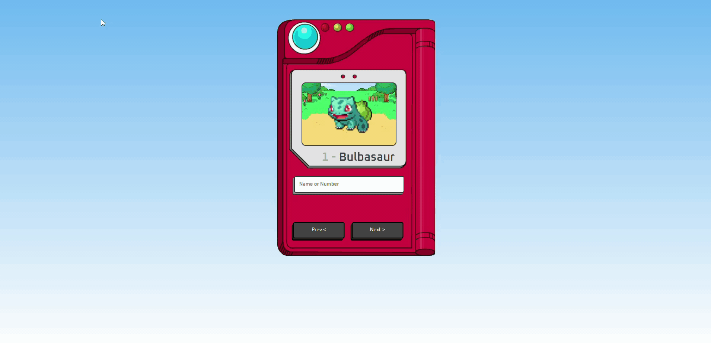
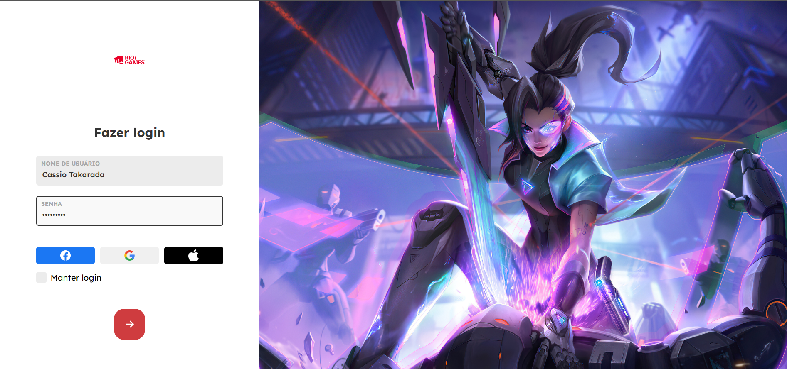

Website
Website Phone
Phone Twitter
Twitter LinkedIn
LinkedInAbout Me
Hi! I'm Cassio Takarada Graduated in Chemical Engineering, Math and currently studying Multiplatform Software Development at "Fatec Franca", I am a technology enthusiast that is always seeking for knowledge. With an innovative and creative mind, I am an organized and practical person, highly dedicated to work (smarter), always focusing on optimizing the process. I am also devoted to making sure that our kids education gets a little bit better everyday. Therefore, gathering technology and education, I've became a partner at Codigo Kid - Franca.


 


